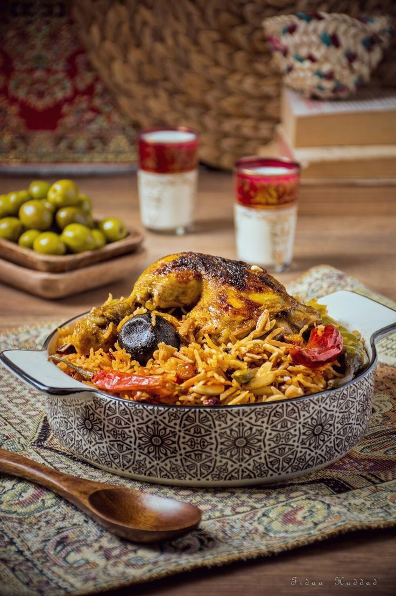

Al Kabsa (Traditional Saudi Rice and Chicken)
Home

Traditional Saudi dish
Al kabsa was the first Arabic dish I ever made. It turned out extremely
delicious and is a new favorite. Serve with fresh mixed cucumber, carrot,
lettuce, and tomato salad — preferably with a little lime vinaigrette.
Some fresh pita bread on the side would also be nice. Saudis like their
kabsa with a hot sauce called shattah. Enjoy!
Ingriedents
Kabsa Spice Mix:
- ½ teaspoon saffron
- ½ teaspoon ground cinnamon
- ½ teaspoon ground allspice
- ½ teaspoon dried whole lime powder
- ¼ teaspoon ground cardamom
- ¼ teaspoon ground white pepper
- Kabsa Dish: ¼ cup butter
- 1 onion, finely chopped
- 6 cloves garlic, minced
- 1 (3 pound) whole chicken, cut into 8 pieces
- ¼ cup tomato puree
- 1 (14.5 ounce) can diced tomatoes, undrained
- 3 carrots, peeled and grated
- 2 whole cloves
- 1 pinch ground nutmeg
- 1 pinch ground cumin
- 1 pinch ground coriander
- salt and freshly ground black pepper to taste
- 3 ¼ cups hot water, plus more if needed
- 1 cube chicken bouillon
- 2 ¼ cups unrinsed basmati rice
- ¼ cup raisins
- ¼ cup toasted slivered almonds
Steps
-
Make spice mix: Stir together saffron, cinnamon, allspice, lime powder,
cardamom, and white pepper in a small bowl; set aside.
-
Make dish: Melt butter in a large stockpot or Dutch oven over medium
heat. Cook and stir onion and garlic in butter until onion has softened
and turned translucent, about 5 minutes. Add chicken and cook over
medium-high heat, stirring occasionally, until lightly browned, about 10
minutes. Mix in tomato purée.
-
Stir in canned tomatoes with juice, carrots, cloves, nutmeg, cumin,
coriander, salt, black pepper, and reserved spice mix. Cook for about 3
minutes; pour in water and add chicken bouillon cube.
-
Bring sauce to a boil, then reduce heat, and cover the pot. Simmer until
chicken is no longer pink and the juices run clear, about 30 minutes.
-
Gently stir in rice. Cover the pot and simmer until rice is tender and
almost dry, about 25 minutes; add raisins and a little more hot water,
if necessary. Cover and cook until rice grains separate, 5 to 10
minutes.
-
Transfer rice to a large serving platter and arrange chicken on top.
Sprinkle with toasted slivered almonds.